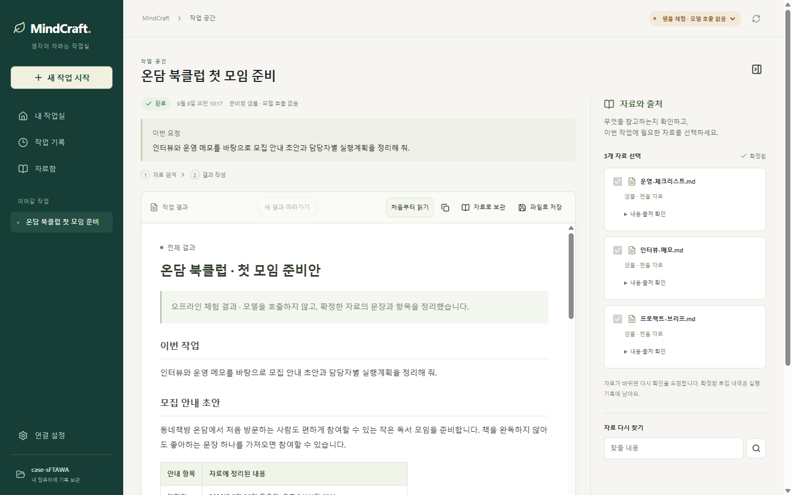
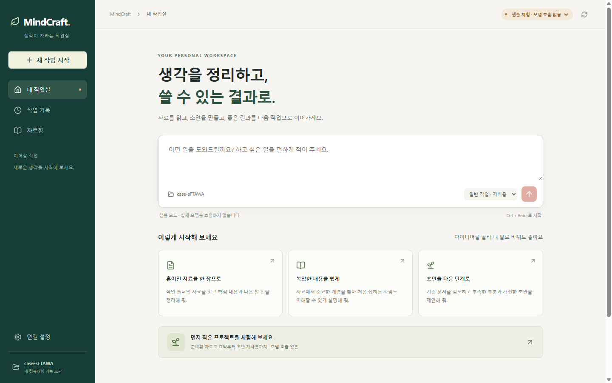
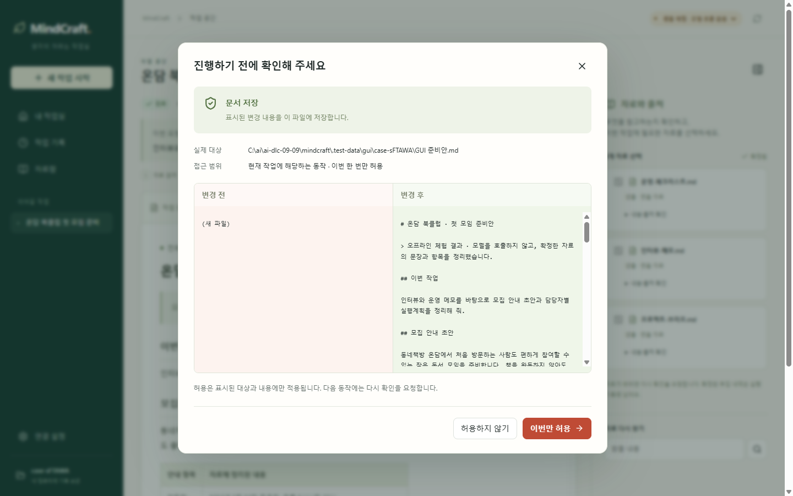
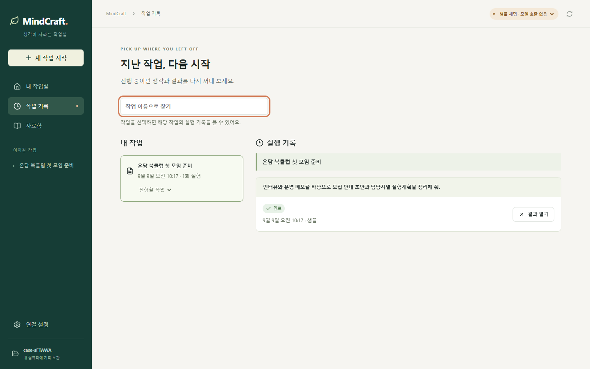
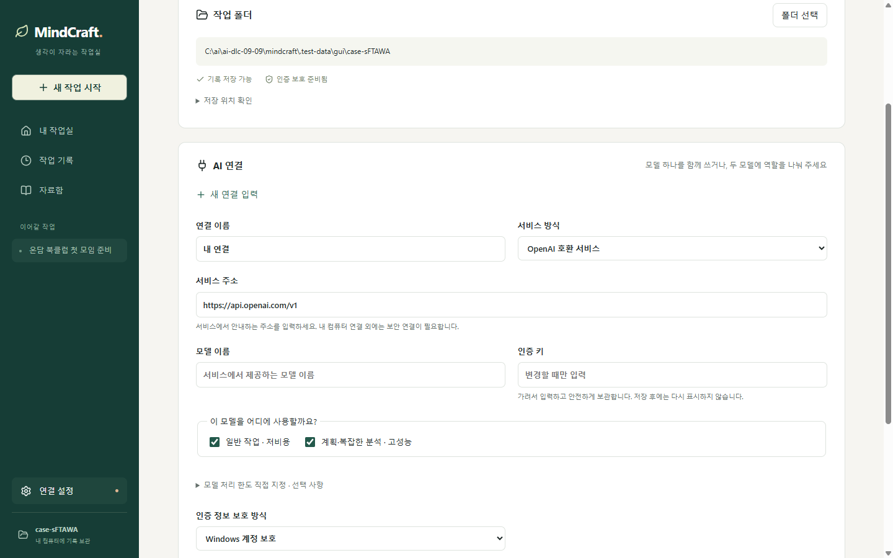

비개발자를 위한 WINDOWS 개인 AI · 1분 소개
AI를 쓰고 싶은데,
설정부터 막막했다면.
비개발자도 내 업무부터 시작하도록.
필수 도구를 담은 실행 파일 하나, 친절한 한국어 안내.
● 개발 중 · 실제 GUI 오프라인 샘플 공개
AI 생성 콘셉트 · 실제 제품 화면 아님
영상을 불러오지 못했습니다. 영상 직접 열기 ↗
2026.09.09 · 실제 실행 화면
말로 소개한 경험을, 화면으로.
오프라인 샘플 · 모델 호출 없음
자료 확인 → 결과 읽기 → 저장 승인 → 작업 기록. 직접 실행한 GUI에서 확인하세요.
01 자료를 고르면, 결과가 한곳에

02 설정이 막막해도, 작은 일부터

03 내 파일은, 확인하고 저장

04 지난 일을 다시 설명하지 않도록

05 모델은 일에 맞게

실제 GUI 캡처 · 개발 중. 현재 지원 범위 보기 ↓
필요한 것은, 이 다섯 가지.
시작부터 다음 작업까지.
한눈에 읽고, 궁금한 것만 눌러보세요.
01 / 쉬운 시작
에이전트를 몰라도,
내 일은 아니까.
필수 하네스를 담은 실행 파일 하나. 한국어 안내를 따라 모델과 자료를 연결하고, 원하는 일을 말합니다.
조금 더 알아보기
1. 실행 파일 열기
별도 개발 도구 설치 없이 시작하는 것이 목표입니다.
Claude Code와는 무엇이 다른가요?
Claude Code는 소프트웨어 개발 중심. MindCraft는 비개발자가 자기 업무를 쉽게 시작하도록 만드는 데 집중합니다.
| 관점 | Claude Code | MindCraft의 설계 방향 |
|---|---|---|
| 중심 경험 | 코드 작업·변경 검토·개발 도구 연계 | 자료 정리·문서 작업을 쉬운 안내로 시작 |
| 시작 방식 | 데스크톱 GUI·터미널 등 | 필수 하네스를 담은 EXE·한국어 온보딩 |
| 업무에 맞추기 | Hooks·CLAUDE.md·자동 기억 등으로 확장 | 작업 절차와 자료 재사용을 한 흐름으로 안내 |
MindCraft는 개발 중이며 사용성·성능 우위를 실측한 비교는 아닙니다. 공식 문서: Desktop · Hooks · Memory (9/9 확인)
하네스가 뭔가요?
AI 모델을 실제로 일하게 만드는 주변 장치입니다. MindCraft는 쉬운 시작, 작업 절차, 지식 재사용, 모델 배정을 하나의 프로그램으로 연결합니다.
현재 지원 범위와 실행 버전
2026년 9월 9일 기준, 실제 GUI의 오프라인 자료→결과→저장 승인→기록 여정과 단일 EXE 패키지가 있습니다. AI-DLC는 코드 생성 진행 중이며, 실제 모델 연결·작업별 전체 검증·비용 및 속도 효과·깨끗한 Windows 환경 검증은 아직 완료되지 않았습니다. 공개 캡처는 최신 개발 화면으로, 별도 전달하는 검증된 이전 EXE와 UI 차이가 있습니다.
권한·모델 연결·실행 안내까지 자세히 보고 싶어요.
파일 변경 전 승인, 중단 후 재개, 자료의 출처와 재사용 기준을 포함한 상세 설명입니다.
제품 상세 소개 ↗ · 시작 준비 안내 ↗처음 맡긴 일이, 다음 일의 출발점이 되도록.
MindCraft의 다섯 가지 다시 보기 ↑